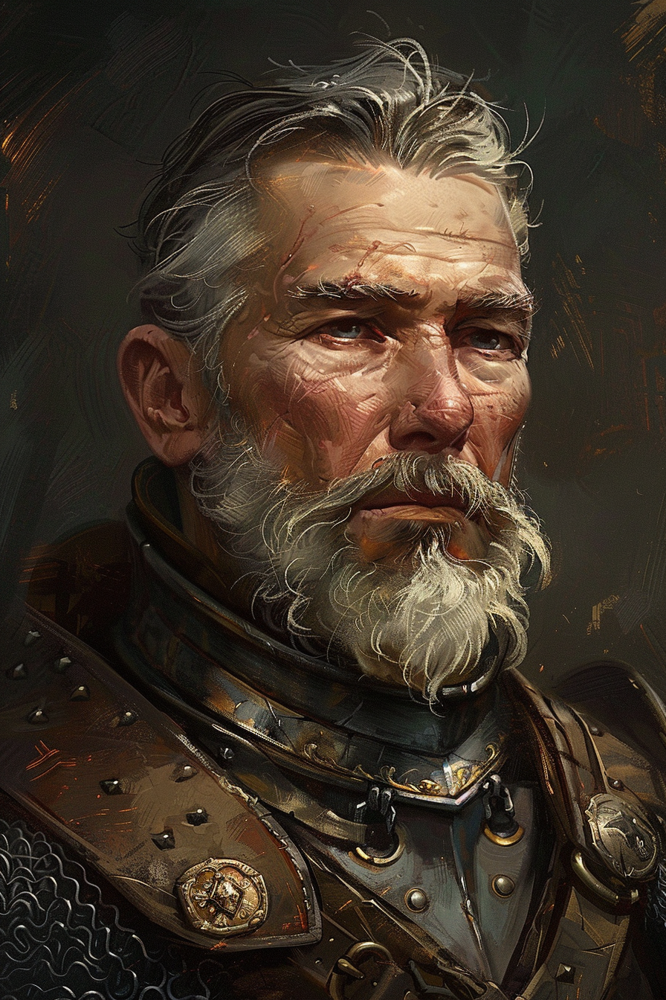
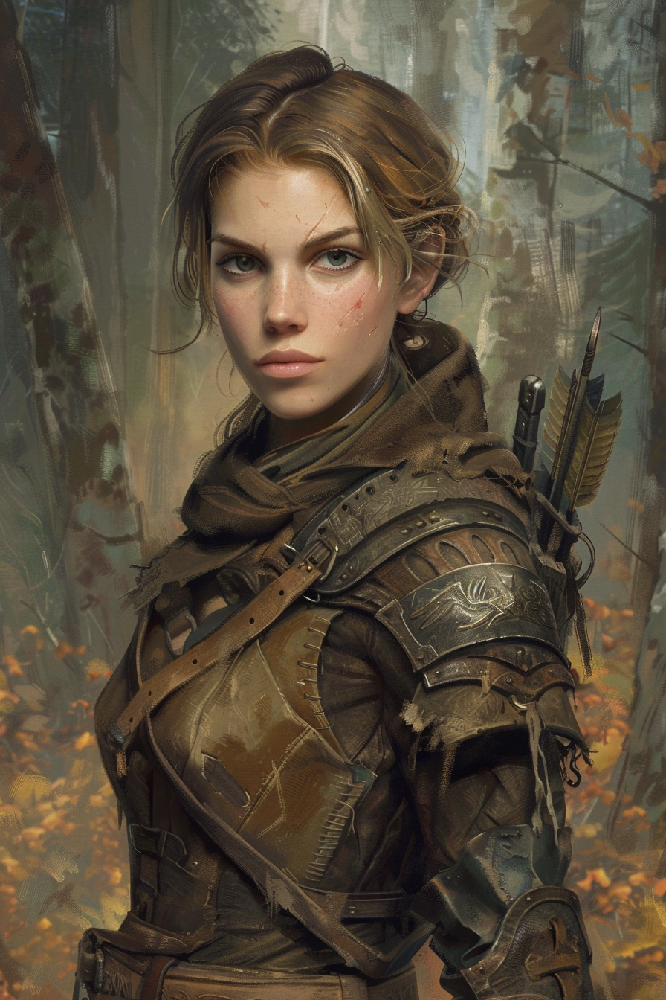
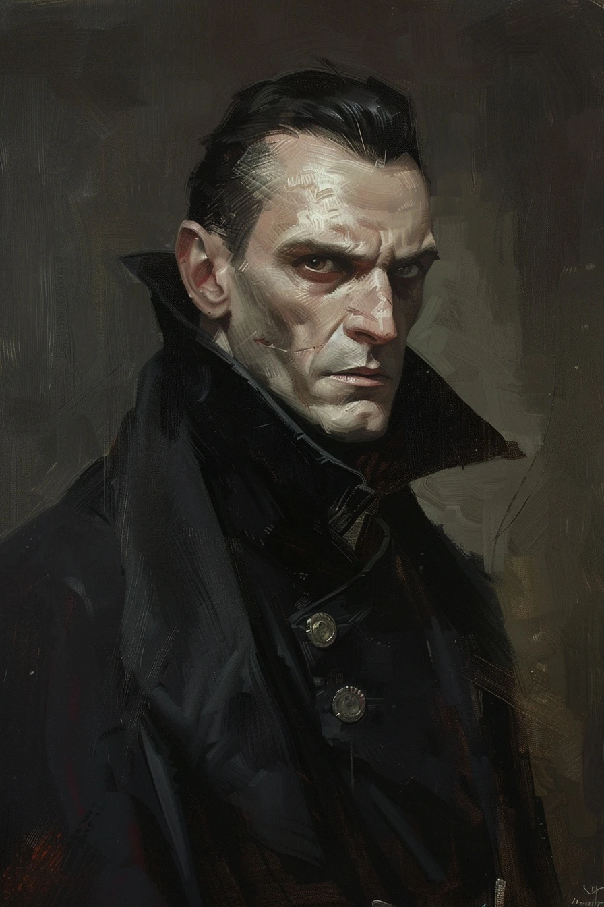
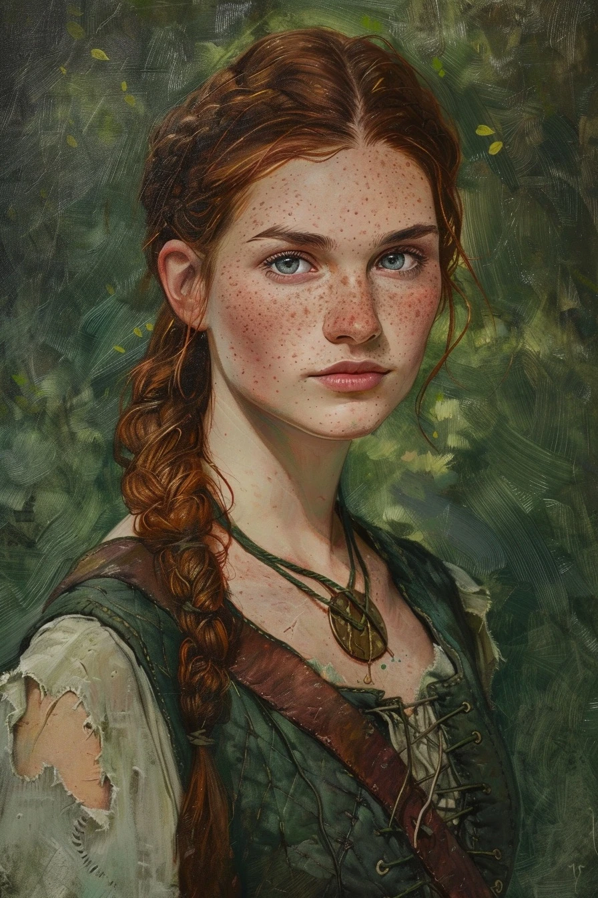
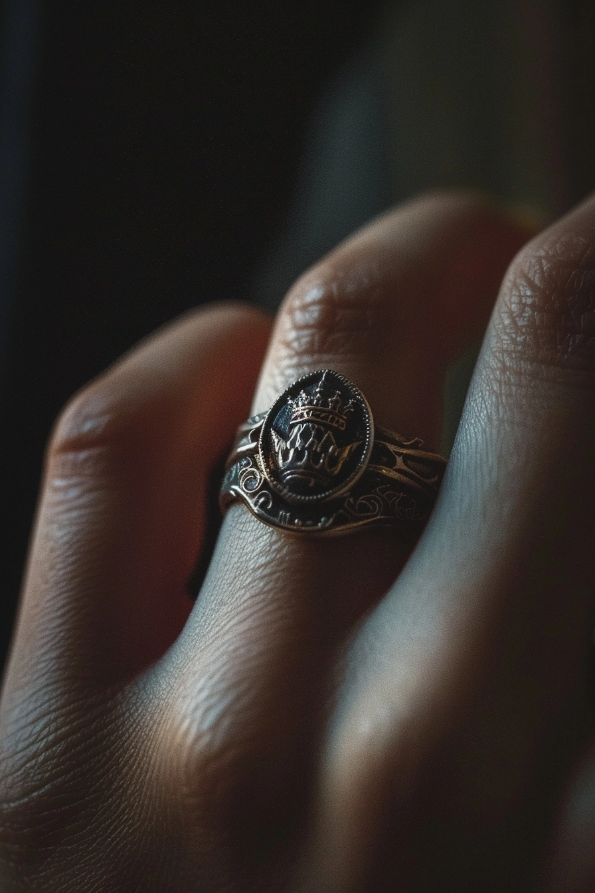
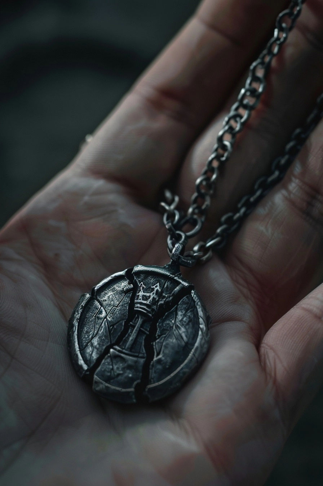
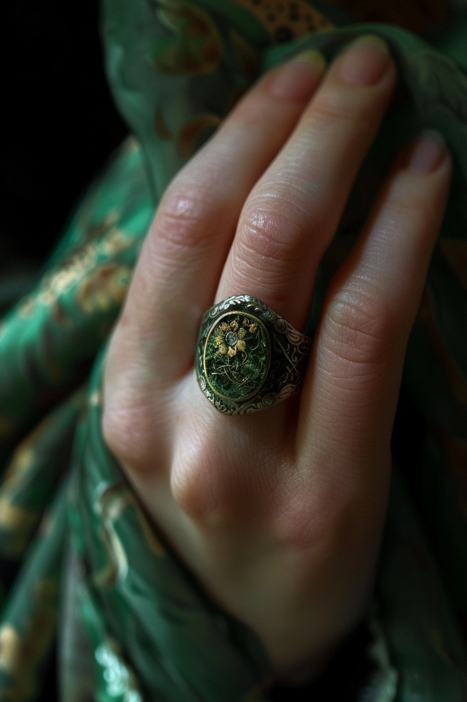

Oath and Bone
A chronicle of Vael Thorne and the borderland seat she inherited from a dead brother
An original tactical RPG in development · The Hive Makes · 2026
A signet ring on a gloved hand. Silver, finish dulled from wear. It slides — down one joint, back up, down again. The hand is not moving. The ring is.
It is loose because it belonged to her brother. He is dead. She is twenty-six, standing at a narrow window in mail-and-leather half-armor that was fitted for him first, holding an open ledger on the cold stone sill, watching a column of riders crest the valley road below Ashreach Keep.
Her name is Vael Thorne. She has not yet learned to walk lightly in rooms that used to be his. Her boots land too loud on the stone. Her posture is borrowed. She is deciding what to do with a ledger that has seven pages torn from it and a fine red-brown residue at every stub.
This is where Oath and Bone begins: in the gap between a death and what it means, before the inheritor knows enough to grieve correctly.
The Borderland Seat
Ashreach Keep sits on a hill in a borderland of gray stone and gray pines. Three Thornes have held it. The first by grant. The second by stubbornness. Torren held it twelve years by the kind of steady trust that accrues to lords who do not demand more than they give — and now he doesn't hold anything. The banners at half-mast have not been raised in eight weeks. Someone forgot, or chose not to.
What Vael inherits: a disputed ridge to the north, an opportunistic neighbor named Lord Orik who has been counting swords at the funeral from a safe distance, a loyal sergeant who knows things he is deciding when to tell her, and a ledger with seven pages missing. The stubs at the spine carry a residue that is not ink. Small marks, scraped with something fine — not a quill. She will not understand what they are until Battle 8. By then she will have learned to hold the ring tighter.
The borderland is not peaceful. Within the first two days of Vael's command, a rival vassal's cavalry tests the eastern crossing, dead deer are found arranged in a ring in the Eastmarch woods, and a sealed crypt below a century-old fort is discovered to have been opened — from the inside. The mundane is turning strange. The magic is off-screen in Act 1; its consequences are on-screen.
"Same crossing. Different wagon."
"How many of ours?"
"Two carters. A boy. And a cavalry scout who shouldn't have been this far out."
— Halv and Vael, Battle 1 pre-battle dialogue, the East Crossing
The People Who Stayed
These are the six heroes of Oath and Bone. Each can die in battle. The game honors that in the prose — every line of dialogue is written to read cleanly whether the speaker is present or absent.






Halv served Torren for twelve years. He is forty-four, grey at the temples, and he knows things Vael doesn't. Some of them he means to tell her. He is deciding the order carefully, because order matters when the knowledge is this kind.
Brin grew up in the Eastmarch woods. She reads signs that others walk past — wrong grass, arranged bodies, a boot print from the wrong direction. She is not easy to like. She is very hard not to trust. She was first to see that the deer in the clearing weren't killed by wolves, because wolves don't arrange.
Caelen has kept the lamps dark in his tower for twenty years. When they come on again — the night Vellum-marked mercenaries arrive to burn it — he is in the doorway, apparently unsurprised. He waited for someone with Torren's seal. He hoped it wouldn't be a child. She is twenty-six. He says he knows.
Marrow is thirty-one, in a cell in Ice-Lakes Keep, scheduled to hang at sunrise. A necromancer who decided something unforgivable and lives with it on purpose. He does not ask to be saved. His first question, before anything else, is whether she is dead.
Thessa steps from seams in standing stones. She heals the wounded, addresses the undead by name, and disappears. She is physically ill inside prisons. She does not explain herself, because she does not need to.
The Three Schools of Magic
The world beneath Ashreach has three traditions of power, each with its own writing system, each with its own relationship to the living and the not-yet-dead. They are not interchangeable. Their practitioners can read each other's work only barely, and only the parts they were meant to read.
Wizardry
Formulated, reproducible, Mana-based. Sanctum tiles recharge the caster; interruption aborts a spell mid-channel. The oldest formal tradition and the most imitated, because its notation can be copied without the knowledge behind it. Caelen understands this is both its strength and the door it left open to everything that followed.
Druidry
Grove-script carved into living wood. Root-hold, wolf-summon, the ability to step through hollow places in the landscape. Thessa's hands are always slightly dirty. She says the soil is paying attention. She is not speaking figuratively. The forest at the Eastmarch Hollow paid attention to the deer before anyone else did.
Necromancy
Vellum-script. Old-One writing. Originally a system of mutual binding between the living and the not-yet-dead — promises with clear terms, both parties consenting. Esra Vellum removed the mutual. The bindings remain. This is the magic that killed Torren Thorne. It is written in his ledger. Vael has been carrying it for eight weeks.
The Antagonist
Esra Vellum does not appear in person until late. She is not a villain in the theatrical sense. She is a mistake that kept walking — someone who learned something true about the world and did not stop when the true thing became a wrong thing. She goes by the material she writes on.
"She writes bindings. On skin. The living kind."
"And my brother."
"I believe your brother was one of her pages."
— Caelen the Quiet, Battle 5 post-battle dialogue, the Wizard's Tower at dawn
Her students carry a triple-loop tattoo on the inner forearm: three interlocking rings. By the time the player sees the first one on a dead mercenary in Act 2, the same shape has already appeared somewhere in Act 1. They will not have recognized it yet. Returning players rewatch the opening with the key in hand and see what they missed.
She does not give monologues. She gives silence, residue, and one or two lines that cost to speak. The ledger stubs are already her voice. Vael has been reading it, without knowing it, since the morning after the funeral.
The ring that doesn't fit is the first word of that voice. By Act 3, it will fit perfectly. This is the horror moment: it means the tether is taking.
The Ring
The ring is shot like a murder weapon throughout. Torren's signet — tower-and-crown, silver, finish dulled from twelve years of daily wear. It slides on Vael's finger in the opening scene. It is a man's ring. It belongs to a dead man whose pages are missing.
The artists were instructed: the ring gets progressively less loose across Acts 1 and 2. By Act 3, it fits perfectly. This is not character growth. It is the tether closing. The ring appears in the final cutscene of each ending, in a different state. The state of the ring is the state of Vael.



Three Possible Histories
Oath and Bone has twelve battles, four branch nodes that change which characters survive and which alliances hold, and three endings. They are not labeled good, bad, and secret. They are three different answers to the same question: what do you do with a wound that belongs to the world, not just to you?
The Endures
Vael closes the wound and keeps holding the ring. It does not fit perfectly. She has kept some distance between herself and the tether. The borderland is safer. She is smaller than she might have been. Some costs are worth paying. Some are not the same thing as failure.
The Falls
She loses. Not all losses are failures. This ending does not punish the player; it asks them to sit with what was genuinely not possible from where they started. Some wounds are that old. By Battle 11, the game has earned the right to say so.
The Widens
Something is released. The ring opens, expands. Whether what escapes is Vael or Torren or Esra Vellum or the Old-One writing or all of them at once is the question the game has earned the right to ask. The answer depends on who survived to reach it.
About the Game
Oath and Bone is a hand-crafted tactical RPG developed by The Hive Makes. The story is written. The characters are designed. The art is rendered. The game's core mechanics are built around a tactical system with terrain that matters, permadeath that the prose honors, and branching choices that carry through all twelve battles.
It is a game for players who care about what happens after the battle. A world where the magical and the mundane are not different genres of experience but the same experience seen from different angles, depending on what you know and when you learned it.
There is no release date. This chronicle is the first public document of the world. The game will follow.
Character portraits and ending cutscenes are AI-generated images created via Midjourney v6 from original prompts. All characters, story, world-building, and game design are original works by The Hive Makes. Oath and Bone is not affiliated with Century Games or the Kingshot mobile game. Images generated 2026-04-24.